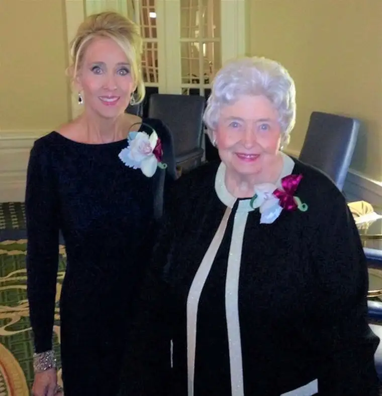
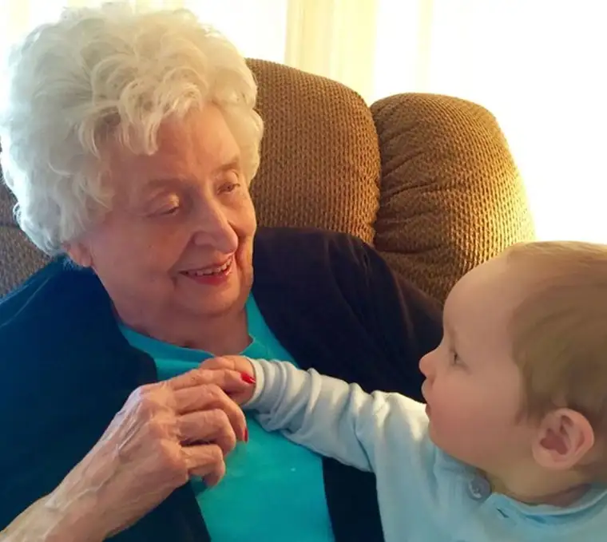
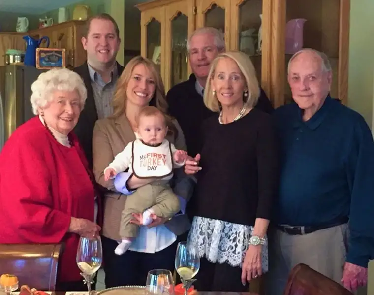

Several years ago, I was involved in a study group for Fr. Michael Gaitley’s “Consoling the Heart of Jesus.” And while reading some of the included sentiments of Pope John Paul II from his 1984 document “Salvifici doloris” (Redemptive Suffering), I was caught by a phrase written in association with his words: “Suffering unleashes love.”
These three words stunned me. Such a tiny phrase with such big implications, and my heart and mind both recognized them as true. For me, this phrase explained so much, and in the years since I have repeated them to others in explaining the Christian understanding of suffering. And trust me, in this world and the current state of things, they are more important to hear than ever.
Recently, I had a chance to see these words in action when writing a story for our local newspaper, The Forum, about a new hospice house that is in the works. North Dakota is currently the only state in our nation without such a place for those who are in the dying process and need extra, compassionate care. This story helped launch the process of bringing such a facility to my city.
And as is the case in a city our size (pop. 120,000), it’s not entirely uncommon for me to know some of the subjects I feature, especially because my religion beat happens to connect to the realm where I most often dwell.
For me, it’s always about the story behind the story — the heart. That’s what I’m after. It’s one thing to talk about a building that needs to be constructed but another to get to the center of why. How did that need become manifest, and what is stirring in the souls of people that they would dedicate their lives to such an endeavor?
I didn’t know everyone included in the piece, but I did know the main subject — Shirley Feeney. Shirley came into our lives during a point in our family’s journey when things were particularly hard. My husband had lost his job, and I was working part time and mothering four kids. In the midst of that hardship, we learned we were pregnant with our fifth.

Shirley was among the angels who came into our lives to help us know we were not alone and that God loved our family dearly. For several years, she reached out in love, taking us shopping for necessities around Christmas time, and, one year, when we were struggling in our marriage, Shirley quietly reached out to help us pay for some counseling sessions. Later, not long before her death in August 2017, she poured out her love in another significant and very practical way that continues to bless us every day.
Shirley’s beautiful heart opened up to our family in ways that showed us the heart of Christ. And we suspect we were not the only recipients of her generosity.

Though Hospice of the Red River Valley is spearheading the hospice house project, in its center is Jesus’ heart, which Shirley lived her life to emulate. That’s one of the many reasons I suspect it will be very successful. You can read the article here, but I’ll swipe these two beginning paragraphs in case you don’t have a chance:
“Through every trial and triumph in her life, Linda Morris says her mother, Shirley Feeney, poured out pure, unconditional love to her. Which is why she yearned to do the same for her in her dying, and why it grieved her so deeply to see her mom suffering so unnecessarily from the effects of ovarian cancer.
“’It was a living hell to see her suffer, not from the cancer but because no one could properly manage her symptoms,” Morris says. “I wanted to give back to this beautiful woman who had cared for others her whole life, and I couldn’t.’”
“Suffering unleashes love.” Shirley suffered greatly through her dying process, something that was beyond heartwrenching for her family to experience. Though I didn’t include it in the article, her daughter Linda told me that she’s not someone who cries easily, but as her mother was going through this, she would spend her nights weeping non-stop; the pain of not being able to relieve her mother’s suffering was simply unbearable.
Instead of curling up in a corner, however, Linda was able to take her grief and bring something meaningful to it. Suffering had unleashed a hurricane-sized swirl of love, which will now translate into the compassionate response toward many others in a similar situation, so that they won’t have to endure what Shirley did.

“Suffering unleashes love.” St. John Paul II was right. We don’t need to ask for suffering; suffering will come to us. It’s part of the human condition. It’s part of free will, which God had to allow his children in order for love to be true and free. It’s the sharp side of the two-edged sword — we will not escape this life without suffering. That’s why Jesus died on the cross; to show us that and show us how. And then he was resurrected, to exemplify to us that suffering — evil, hardship, destruction, death – would not be the end.
The hospice house project, which Linda considers “Shirley’s Project,” is the resurrection following a period of intense suffering. I’m sure the family still would wish that their dear mother, wife and grandmother would have been spared. But there’s no going back now. Only forward in love.
Q4U: When has suffering unleashed love in your life, or the life of a loved one?